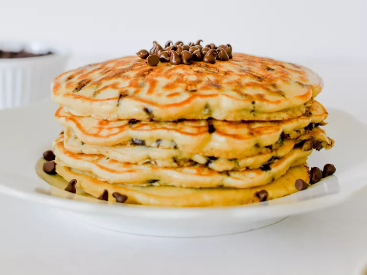

Chocolate Chip Pancakes

Description
A food that most kids love, a light and fluffy meal with pockets of gooey chocolates!
Ingredients needed
- 3/4 cup of milk (177.4 ml)
- 2 tablespoons of white vinegar
- 1 cup of all-purpose flour (120 grams)
- 2 tablespoons of white sugar
- 1 teaspoon of baking powder
- 1/2 teaspoon of baking soda
- 1/4 teaspoon of salt
- 1 large egg
- 2 tablespoons of unsalted butter, melted
- 1 teaspoon of vanilla extract
- 1/2 cup of mini chocolate chips (80 grams)
- Cooking spray
Instructions
- To make buttermilk, combine milk and vinegar in a bowl and set it aside for 5 minutes to sour the milk.
- Combine flour, sugar, baking soda, baking powder, and salt in a large mixing bowl.
- Whisk egg, butter, and vanilla extract into buttermilk mixture until well combined; add flour mixture and whisk until just combined. Fold in chocolate chips. The pancake batter will be thick. Allow batter to rest for 5 minutes.
- Heat a large skillet over medium-low heat, and coat with cooking spray
- Pour about 1/4 cup of batter for each pancake onto the skillet. Cook until bubbles appear on the surface, 2 to 4 minutes. Flip the pancake and cook until brown on the other side, 2 to 3 more minutes.
- Repeat step 5 with remaing batter.